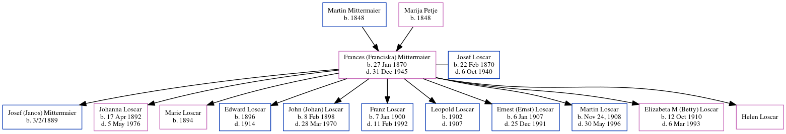

Frances Loscar (née Mittermaier) 1870 - 1945
[ Home ] | [ Calendar ] | [ Surnames Index ] | [ Census Index ] | [ Family History ]The child of Martin Mittermaier and Marija Petje, Frances Mittermaier, the great-grandmother of Michele Copp (née Phillips), was born in Tebonje, Yugoslavia on Jan 27, 18701,2,3,4,5,6,7 and married Josef Loscar (a hatmaker with whom she had 11 children: Josef (Janos), Johanna A., Marie, Edward, John (Johan), Franz Josef, Leopold, Ernest (Ernst), Martin J, Elizabeta M (Betty) and Helen) in Terbonje, Yugoslavia on Jun 18, 1893.
During her life, she was living in Fairfax, Tucker, West Virginia, USA in 19208; in Pittsburgh, Allegheny, Pennsylvania in 19301; in Davis, Tucker, West Virginia in 19352; in Davis, West Virginia in 19402; and in Laibach S. H. S4. On May 14, 1921 she arrived in New York, New York. She traveled from Le Havre.
She died on Dec 31, 1945 in Davis, , West Virginia5,6 and was buried in Thomas, Tucker County, West Virginia after Dec 31, 19455,6.
Parents
- Martin Josef was born in 1848
- Marija was born in 1848
Children
- Josef (Janos) was born on 3/2/1889
- Johanna A. was born on Apr 17, 1892
- Marie was born in 1894
- Edward was born in 1896
- John (Johan) was born on Feb 8, 1898
- Franz Josef was born on Jan 7, 1900
- Leopold was born in 1902
- Ernest (Ernst) was born on Jan 6, 1907
- Martin J was born in Nov 24, 1908
- Elizabeta M (Betty) was born on Oct 12, 1910
Citations
- 1930 United States Federal Census Online publication - Provo, UT, USA: MyFamily.com, Inc., 2002.Original data - United States of America, Bureau of the Census. Fifteenth Census of the United States, 1930. Washington, D.C.: National Archives and Records Administration, 1930. T626, 2,667 rol
- 1940 United States Federal Census Ancestry.com Operations, Inc. (Marital Status: Married; Relation to Head: Wife)
- Ancestry Family Trees Online publication - Provo, UT, USA: The Generations Network. Original data: Family Tree files submitted by Ancestry members.
- New York Passenger Lists, 1820-1957 Online publication - Provo, UT, USA: The Generations Network, Inc., 2006.Original data - Passenger Lists of Vessels Arriving at New York, New York, 1820-1897; (National Archives Microfilm Publication M237, 675 rolls); Records of the U.S. Customs Service, R
- U.S., Find A Grave Index, 1600s-Current Ancestry.com Operations, Inc.
- West Virginia, Deaths Index, 1853-1973 Ancestry.com Operations, Inc.
- West Virginia, Naturalization Records, 1814-1991 Ancestry.com Operations, Inc.
- 1920 United States Federal Census Online publication - Provo, UT, USA: MyFamily.com, Inc., 2005. For details on the contents of the film numbers, visit the following NARA web page: NARA. Note: Enumeration Districts 819-839 on roll 323 (Chicago City.Original data - United States of America
Family Tree
Generated by ged2site. Last updated on Jun 6, 2024